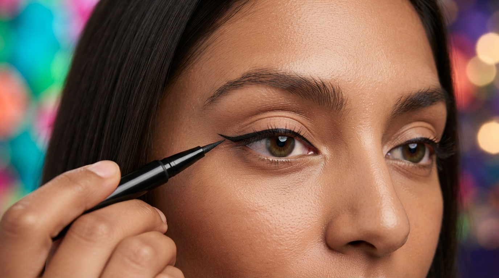

Delineado para iniciantes: controle vem antes do gatinho perfeito
O delineado é uma das técnicas que mais intimida quem começa a se maquiar. Uma pequena mudança de ângulo pode deixar um lado diferente do outro e, quando tentamos corrigir adicionando mais produto, a linha cresce rapidamente até ocupar boa parte da pálpebra. O problema geralmente não está na falta de talento, mas na tentativa de fazer um desenho grande antes de dominar linhas pequenas.
Aprender delineado fica muito mais fácil quando você divide a técnica em etapas. Primeiro, pratique uma linha fina próxima aos cílios. Depois aprenda a direcionar uma pequena extensão no canto externo. Somente então conecte essa extensão à linha principal para formar o gatinho.
Outro ponto fundamental é aceitar que os olhos não são perfeitamente idênticos. Pequenas diferenças de formato e altura fazem com que um desenho copiado milimetricamente nem sempre pareça visualmente igual. O objetivo é equilíbrio quando o rosto é observado de frente.
1. Qual delineador escolher?
Caneta, líquido, gel e lápis são algumas das opções mais utilizadas.
Cada textura oferece uma sensação diferente de controle.
Para começar, escolha uma ferramenta que permita fazer linhas pequenas sem exigir muita pressão.
2. Delineador em caneta
A ponta semelhante a uma caneta oferece familiaridade para muitas pessoas.
Modelos com ponta fina facilitam desenhos pequenos e preenchimento próximo à raiz dos cílios.
A pigmentação e flexibilidade variam bastante entre produtos.
3. Delineador líquido
Normalmente entrega alta pigmentação e linhas definidas.
O aplicador pode exigir maior controle porque a fórmula permanece líquida por alguns segundos.
Comece com pouco produto no pincel.
4. Delineador em gel
É aplicado com pincel e permite controlar quantidade e formato.
Um pincel chanfrado ou muito fino pode ser utilizado.
Evite carregar demais a ferramenta.

5. Lápis pode ser usado como delineador?
Sim. Um lápis macio pode criar uma linha próxima aos cílios e é excelente para looks esfumados.
Ele geralmente não produz o mesmo acabamento extremamente preciso de alguns líquidos, mas oferece maior margem para correção.
Para iniciantes, pode ser uma ótima forma de praticar direção.
6. Prepare a pálpebra
Oleosidade pode fazer algumas fórmulas transferirem.
Uma pequena quantidade de primer ou pó pode ajudar dependendo da pele e do produto.
Evite criar uma camada grossa antes do delineado.
7. Apoie a mão
Um dos maiores ganhos de estabilidade vem do apoio.
Coloque o cotovelo sobre uma superfície firme quando possível.
Você também pode apoiar levemente um dedo no rosto, tomando cuidado para não deslocar a maquiagem.
8. Olhe para frente
Principalmente ao planejar o gatinho, observe os olhos em posição natural.
Se você estica muito a pálpebra e desenha somente nessa posição, a linha pode mudar de formato quando a pele volta ao lugar.
Faça ajustes olhando para frente.
9. Comece pela raiz dos cílios
Antes do gatinho, aprenda a criar uma linha fina próxima à raiz.
Faça pequenos traços em vez de tentar atravessar todo o olho de uma só vez.
Conecte os segmentos gradualmente.
10. Do meio para fora
Começar no centro da pálpebra pode facilitar o controle de espessura.
Leve a linha até o canto externo.
Depois utilize o pouco produto restante para trabalhar a região interna.
11. O canto interno deve ser mais fino
Em muitos estilos clássicos, a linha começa muito fina e aumenta gradualmente.
Isso reduz a chance de fechar visualmente o olho.
Use apenas a ponta do aplicador nessa região.
12. Como definir a direção do gatinho
Observe a linha dos cílios inferiores e imagine sua continuação em direção à lateral.
Essa referência pode ajudar a escolher o ângulo.
Não precisa seguir exatamente essa direção se seu formato de olho ou estilo pede outra solução.
13. Faça primeiro uma pequena marca
Em vez de desenhar um gatinho completo, coloque apenas um pequeno traço no canto externo.
Faça o mesmo no outro olho.
Compare os dois antes de continuar.
14. Compare altura e direção
Olhe de frente e afaste-se um pouco do espelho.
Veja se os dois traços apontam aproximadamente para direções equivalentes.
Corrigir nesse estágio é muito mais fácil.
15. Como conectar ao olho
Depois da marca externa, conecte sua ponta a uma região da linha principal próxima ao canto externo.
Isso cria um pequeno triângulo.
Preencha o interior gradualmente.
16. Não faça o triângulo enorme
Quanto maior o espaço, maior a chance de um lado ficar diferente.
Comece pequeno.
Você sempre pode aumentar depois.

17. Como engrossar o delineado
Depois que a estrutura está pronta, aumente a espessura somente onde necessário.
Faça isso de fora para dentro.
Evite engrossar automaticamente o canto interno.
18. Como corrigir uma pequena falha
Espere a fórmula secar quando necessário.
Use um pincel muito fino com uma pequena quantidade de corretivo ou base.
Limpe apenas a borda que precisa de ajuste.
19. Cotonete para correções
Um cotonete pode ajudar quando a fórmula ainda permite remoção.
Use com cuidado para não retirar grande parte da sombra ao redor.
Faça movimentos pequenos.
20. Como corrigir um lado mais grosso
Não aumente imediatamente o lado fino para igualar.
Primeiro tente reduzir o lado mais grosso.
Essa estratégia evita que o delineado cresça progressivamente.
21. Como corrigir direção diferente
Limpe apenas a ponta externa e redesenhe.
Não precisa apagar toda a linha da pálpebra.
Compare novamente antes de preencher.
22. O problema de esticar o olho
Quando a pele é puxada, o formato muda.
Ao soltar, a linha pode ficar torta ou subir em outra direção.
Use apoio e mantenha a pálpebra o mais natural possível.
23. Delineado em pálpebra caída
Parte do desenho pode desaparecer dentro da dobra quando os olhos estão abertos.
Por isso, planeje o gatinho olhando para frente.
Algumas pessoas utilizam um desenho adaptado que parece diferente com os olhos fechados, mas cria uma linha contínua quando abertos.
24. O que é bat wing liner?
É uma técnica frequentemente utilizada em pálpebras onde a dobra interfere no desenho tradicional.
O gatinho pode apresentar uma pequena quebra ou formato de asa quando o olho está fechado.
Quando aberto, a linha cria a direção desejada.
25. Delineado para olhos pequenos
Uma linha muito grossa pode ocupar grande parte da pálpebra visível.
Se deseja preservar espaço, comece o mais fino possível.
Concentre espessura apenas na região externa.
26. Delineado para olhos grandes
Existe maior espaço para experimentar espessuras diferentes.
Ainda assim, escolha de acordo com o estilo e não por uma regra de formato.
Linhas finas também podem ficar excelentes.
27. Delineado para olhos redondos
Uma extensão mais lateral pode criar sensação de alongamento.
Isso é uma escolha estética, não uma correção obrigatória.
Experimente diferentes ângulos.
28. Delineado para olhos amendoados
O formato costuma aceitar vários estilos de linha e gatinho.
Você pode acompanhar a direção natural ou criar contraste.
O princípio de começar pequeno continua válido.
29. Delineado sem gatinho
Uma linha rente aos cílios já consegue definir o olhar.
Essa é uma ótima opção para iniciantes e maquiagem cotidiana.
Você pode deixá-la levemente mais espessa no canto externo.
30. Delineado esfumado
Utilize lápis ou sombra profunda próxima aos cílios.
Depois trabalhe a borda com pincel pequeno.
Esse estilo é mais tolerante a pequenas diferenças.
31. Delineado com sombra
Molhar levemente um pincel apropriado pode intensificar determinadas sombras.
Você também pode utilizá-las secas para resultado suave.
É uma excelente maneira de praticar direção antes de usar líquido.
32. Delineado marrom
Marrom pode oferecer definição mais suave do que preto.
Funciona especialmente bem em maquiagens naturais e tons quentes.
Não existe obrigação de começar pelo preto.
33. Delineado colorido
Depois que dominar a estrutura, troque a cor mantendo a mesma técnica.
Azul, vinho, verde e outras cores podem transformar uma maquiagem simples.
Observe pigmentação e necessidade de camadas.
34. Delineado duplo
É uma técnica mais avançada em que duas linhas criam um desenho gráfico.
Domine primeiro o gatinho simples.
Depois use a primeira linha como referência para a segunda.
35. Delineado gráfico
Utiliza linhas fora do formato tradicional.
Precisão e planejamento são mais importantes porque áreas vazias fazem parte do desenho.
Faça pequenas marcações antes de conectar.
36. Delineado e cílios postiços
Uma linha próxima aos cílios pode ajudar a integrar a faixa dos cílios postiços.
Faça primeiro o delineado principal.
Depois dos cílios, você pode retocar pequenas áreas se necessário.

37. Quando aplicar máscara de cílios
Normalmente é mais simples finalizar o delineado antes da máscara.
Cílios já cobertos podem atrapalhar a aproximação da caneta ou pincel.
Depois do delineado seco, aplique máscara.
38. Como evitar transferência
Escolha uma fórmula compatível com sua pele e deixe secar completamente.
Pálpebras muito oleosas podem precisar de preparação.
Evite piscar com força imediatamente depois da aplicação de líquidos.
39. Delineador à prova d'água é obrigatório?
Não. Ele pode oferecer maior resistência em determinadas situações, mas também pode exigir remoção específica.
Escolha conforme sua rotina.
Não sacrifique conforto apenas pela promessa de maior duração.
40. Como remover sem esfregar
Utilize um removedor apropriado para a região dos olhos.
Deixe o produto agir conforme suas instruções antes de esfregar.
Movimentos agressivos podem irritar a região.
41. Higiene
Evite compartilhar delineadores de contato próximo aos olhos.
Mantenha tampas fechadas.
Observe mudanças incomuns de cheiro, textura ou desempenho.
42. Caneta secando durante a aplicação
Algumas pontas perdem pigmentação quando encontram sombra em pó ou produtos cremosos.
Limpe cuidadosamente conforme permitido pelo fabricante.
Evite pressionar com força para tentar liberar mais produto.
43. Como treinar no papel
Você pode praticar pressão e direção desenhando linhas sobre papel.
Isso não reproduz perfeitamente a textura da pele, mas ajuda a conhecer a ferramenta.
Treine linhas finas, curvas e pequenos triângulos.
44. Como treinar no próprio olho
Faça apenas uma linha rente aos cílios nas primeiras sessões.
Depois adicione um gatinho curto.
Aumente gradualmente conforme sua coordenação melhora.
45. Não tente copiar um gatinho enorme no primeiro dia
Quanto maior o desenho, mais pontos precisam coincidir entre os olhos.
Gatinhos pequenos ensinam exatamente os mesmos fundamentos.
Domine o pequeno antes de aumentar.
46. Afaste-se do espelho
De muito perto, uma diferença mínima parece gigantesca.
Observe o rosto inteiro regularmente.
Talvez os dois lados já estejam visualmente equilibrados mesmo sem perfeição milimétrica.
47. Fotografe de frente
A câmera ajuda a perceber direção e espessura.
Faça uma foto com expressão natural.
Compare antes de continuar corrigindo.
48. O erro de corrigir adicionando sempre mais
Esse é um dos motivos para o delineado crescer demais.
Quando um lado está grosso, tente reduzir.
Não transforme automaticamente o lado fino em outro lado grosso.
49. O erro de começar pelo gatinho
Algumas pessoas conseguem, mas iniciantes geralmente ganham controle aprendendo primeiro a linha dos cílios.
Depois o gatinho se torna apenas uma extensão.
Isso reduz o número de decisões feitas simultaneamente.
50. O erro de comparar sua mão com a de outra pessoa
Coordenação é uma habilidade adquirida.
Uma pessoa que faz delineado diariamente há anos possui milhares de repetições.
A dificuldade inicial é normal e diminui com prática consistente.
51. Como criar uma rotina de treino
Escolha dois ou três dias por semana e faça apenas o delineado, mesmo que não vá sair maquiada.
Pratique gatinhos pequenos.
Remova e repita quando necessário.
52. Use sempre a mesma ferramenta no começo
Trocar de caneta, gel e líquido a cada tentativa muda completamente a sensação da mão.
Escolha uma ferramenta e aprenda seu comportamento.
Depois experimente outras.
53. Delineado deve ser perfeitamente igual?
Não. O que importa é equilíbrio visual com os olhos abertos.
Pequenas diferenças fazem parte da anatomia do rosto.
Procure uma direção coerente em vez de obsessão por milímetros.
54. Como saber quando parar
Afaste-se e observe.
Se direção e espessura parecem equilibradas, provavelmente já terminou.
Continuar mexendo aumenta a chance de transformar uma pequena diferença em um problema maior.
Conclusão
Aprender delineado exige prática, mas a técnica se torna muito mais acessível quando é dividida em partes. Comece dominando uma linha fina rente aos cílios e só depois acrescente o gatinho.
Faça uma pequena marca externa nos dois olhos antes de conectar, compare de frente e corrija enquanto o desenho ainda está pequeno. Apoiar a mão e trabalhar com traços curtos aumenta bastante o controle.
Com repetição, movimentos que inicialmente exigem muita concentração começam a se tornar naturais. O objetivo não é perfeição matemática, mas um delineado equilibrado que combine com seus olhos e com a maquiagem.
Leia também: Como esfumar sombra →
Leia também: Como preencher sobrancelhas →
Acessar os tutoriais gratuitos →
Perguntas frequentes
Qual delineador é mais fácil para iniciantes?
Muitas pessoas encontram bom controle com caneta de ponta fina ou lápis. A melhor opção é aquela que permite criar pequenos traços sem exigir muita pressão.
Como deixar os dois gatinhos parecidos?
Faça primeiro apenas uma pequena marca externa em cada olho, compare direção e altura e somente depois conecte e preencha.
Como corrigir delineado muito grosso?
Tente reduzir a borda com pincel fino, cotonete ou pequena quantidade de corretivo em vez de engrossar imediatamente o outro lado.
Preciso esticar a pálpebra?
Não é recomendado depender de uma grande distensão da pele, porque o formato pode mudar quando você solta. Faça boa parte do desenho olhando para frente com o olho em posição natural.